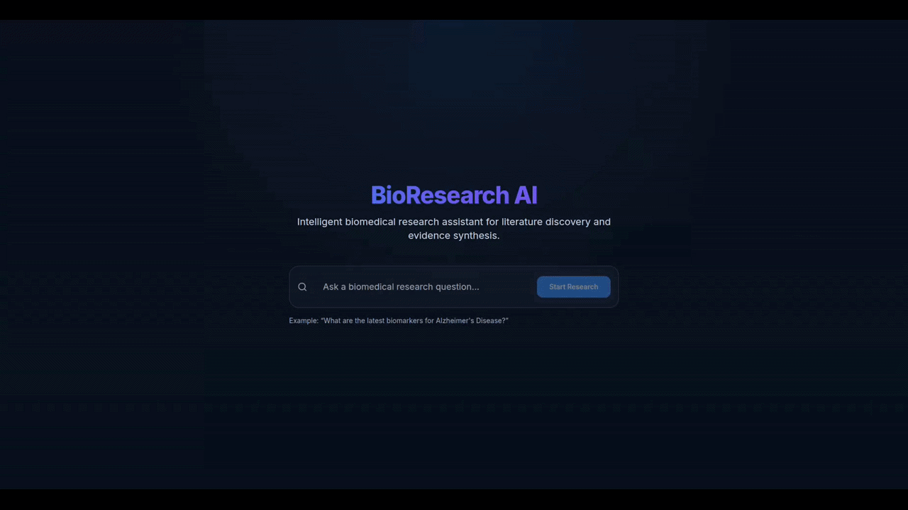
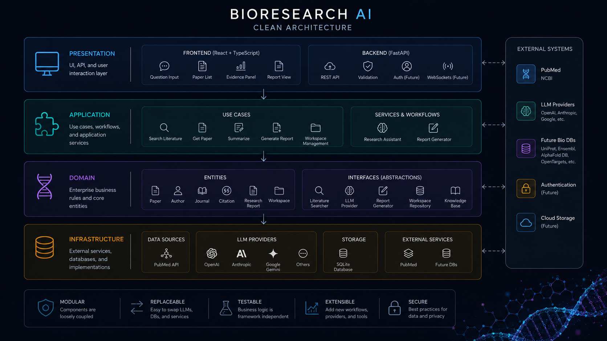

BioResearch-AI
An AI-powered research assistant for biomedical literature discovery, evidence synthesis and scientific reasoning.
Overview
BioResearch-AI explores how agentic AI systems can assist scientists by combining large language models, retrieval systems, literature analysis and structured reasoning workflows.
The objective is to build an extensible platform capable of supporting biomedical researchers throughout the scientific discovery process.
The Problem
Biomedical research produces an enormous amount of information: scientific publications, datasets, experimental results and clinical evidence.
Researchers often spend significant time searching literature, comparing findings and synthesizing evidence before reaching scientific conclusions.
BioResearch-AI investigates how AI systems can reduce this information bottleneck while keeping scientists in control of the final decisions.
Demo

Scientific Workflow
The system transforms a natural language research question into a structured evidence-based report while maintaining traceability between conclusions and supporting publications.
Key Capabilities
Literature Discovery
Search biomedical publications using natural language queries.
Evidence Synthesis
Combine findings from multiple studies into coherent summaries.
Citation Awareness
Keep generated conclusions connected to supporting scientific evidence.
Agentic Workflows
Coordinate multiple AI capabilities into scientific reasoning pipelines.
Application Example
Example research question:
Can GLP-1 receptor agonists slow the progression of Alzheimer's disease?
BioResearch-AI can:
- Search PubMed
- Retrieve relevant publications
- Generate paper summaries
- Compare evidence across studies
- Produce a citation-aware executive report
Software Architecture

The project follows Clean Architecture and Domain-Driven Design principles.
This separation allows AI providers, databases, APIs and user interfaces to evolve independently while keeping the core logic testable.
Technology Stack
Engineering Principles
Modular
Components are designed to be replaceable and extensible.
Replaceable
Different AI providers and data sources can be integrated through adapters.
Testable
Core scientific workflows remain isolated from external dependencies.
Future Directions
- Multi-agent scientific collaboration
- Long-term research memory
- Knowledge graph integration
- MCP-based scientific tools
- Automated experimental planning
Repository
Source code, documentation and implementation details:
GitHub Repository